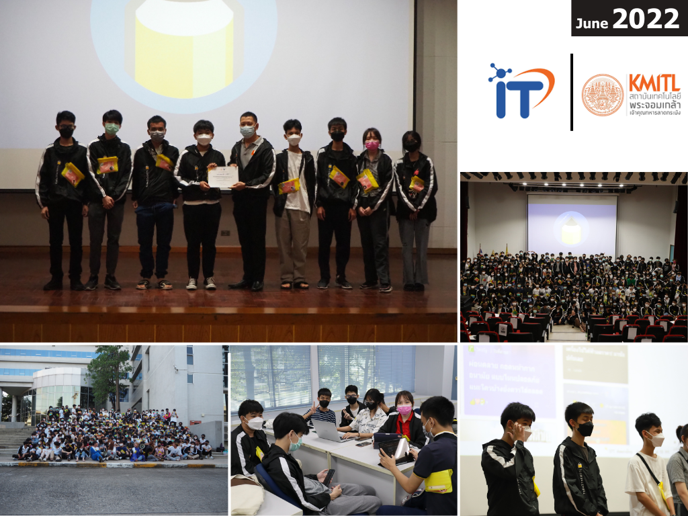
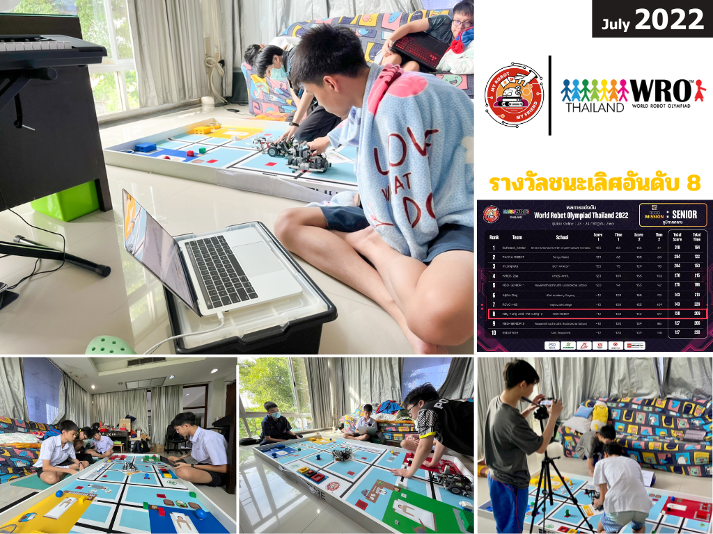
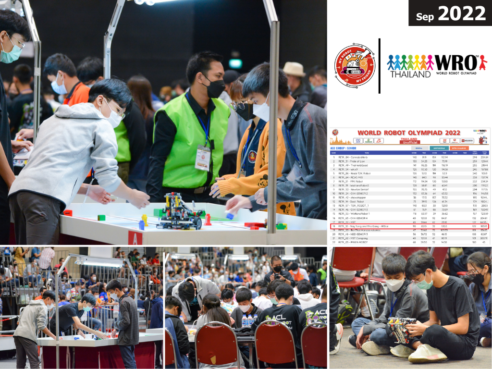
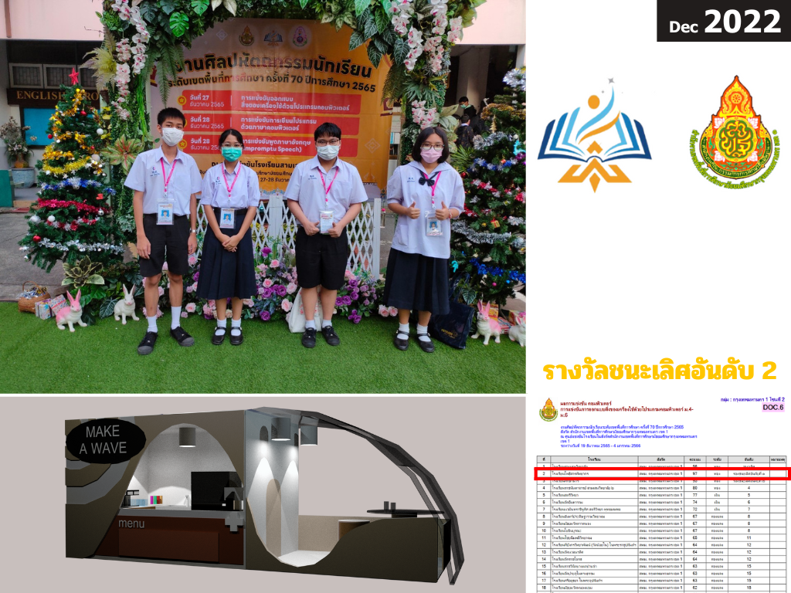
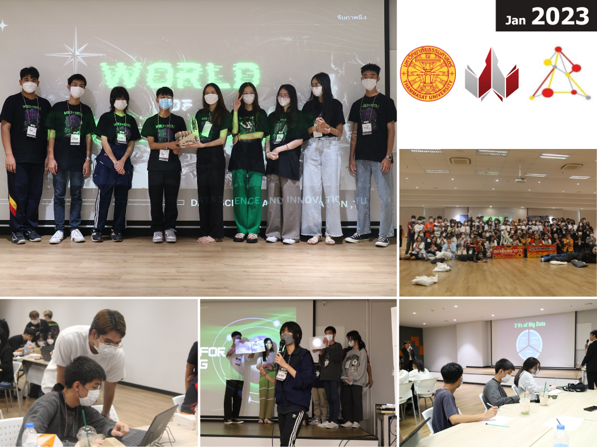
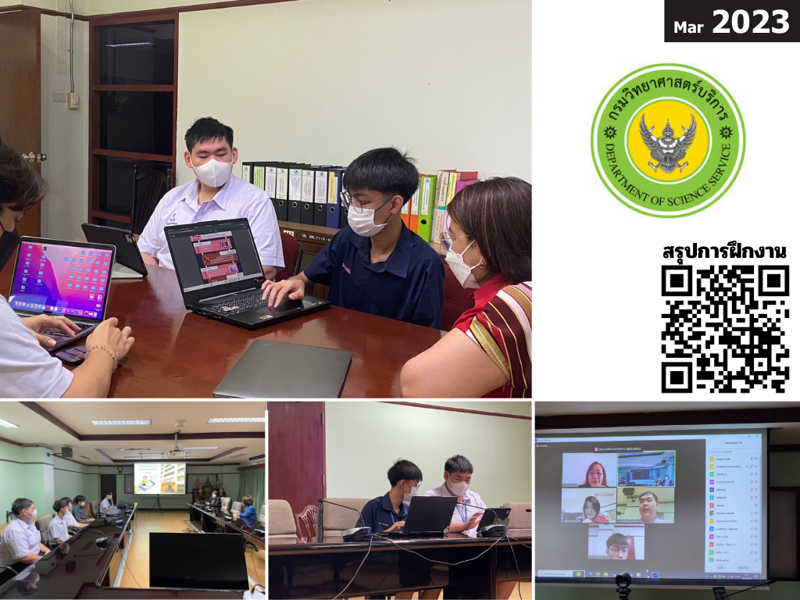
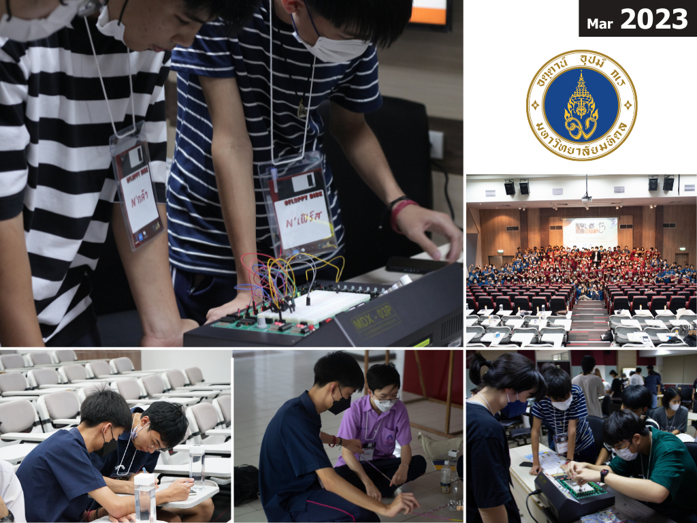
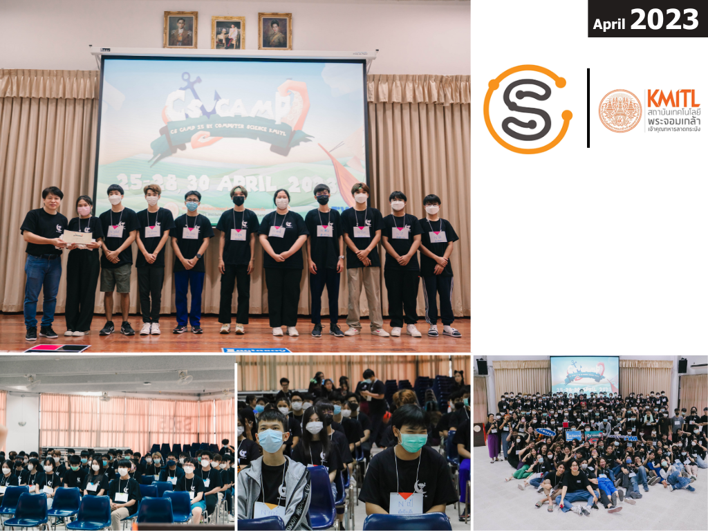
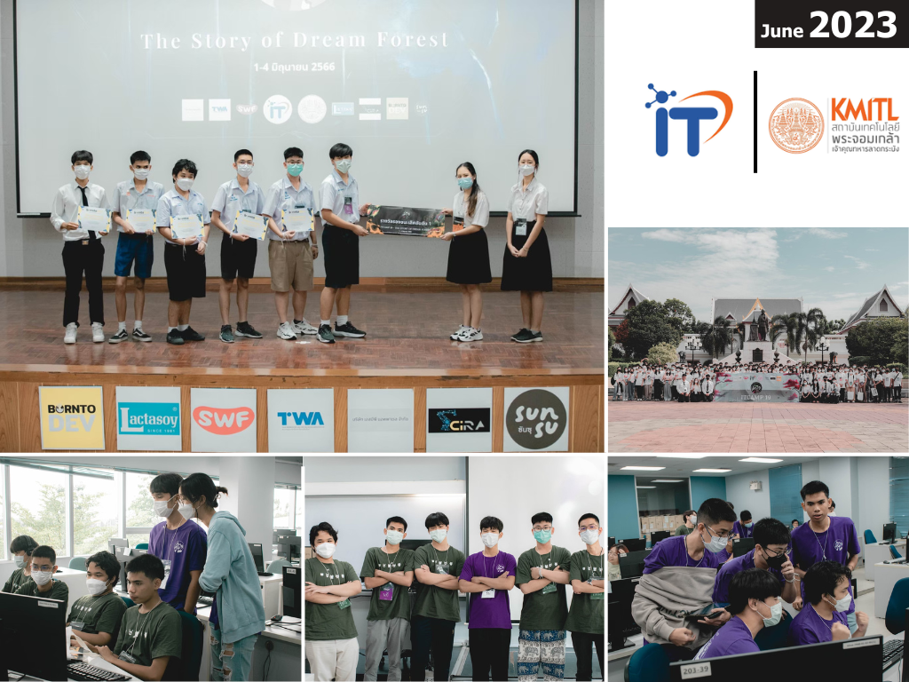

การพัฒนาโปรแกรมเพื่อรองรับการเก็บข้อมูลสภาพแวดล้อมทางอากาศ
ภายใต้โครงการพัฒนานวัตกรรมด้านเทคโนโลยีอวกาศดาวเทียมวงโคจรต่ำ (Low Earth Orbit)
เมื่อวันที่ 22 กรกฏาคม พ.ศ.2563 ณ สถาบันวิชาการ ทีโอที จังหวัดนนทบุรี
.png)
ได้เรียนรู้เกี่ยวกับบอร์ดและภาษา Rasberry Pi เป็นครั้งแรก เป็นประสบการณ์ที่แปลกใหม่มากๆ
โครงการกิจกรรมค่ายออนไลน์ “Smart Plant Factory” แผนการเรียนเตรียม วิทยาศาสตร์-คอมพิวเตอร์
เป็นโครงการในความร่วมมือระหว่างงานคอมพิวเตอร์กลุ่มสาระวิทยาศาสตร์ โรงเรียนโพธิสารพิทยากรและ สวทช.
ระหว่างวันที่ 28-30 กันยายน พ.ศ.2564 ผ่านระบบ Zoom Meeting วิทยากรจาก สวทช.
.png)
เป็นการนำเอาระบบ IOT หรือ Internet Of Thing มาประยุกต์ใช้ในการเกษตรจริงๆ
ได้เรียนรู้เกี่ยวกับ Thonny, การสังเคราะห์แสงของพืช, Line Bot และเซนเซอร์ต่างๆมากมาย
กิจกรรมปฐมนิเทศ-ค่ายกลุ่มสัมพันธ์ นักเรียนระดับชั้น ม.4 ปีการศึกษา 2565
ระหว่างวันที่ 11 พฤษภาคม พ.ศ.2565 ณ โรงเรียนโพธิสารพิทยากร
.png)
ทำหน้าที่เป็นวิทยากรสอนใช้งาน CodeCombat/แนะแนวการเขียนภาษาไพทอนเบื้องต้น
ได้ฝึกความเป็นผู้นำ การทำงานเป็นทีม รวมถึงการแก้ไขปัญหาเฉพาะหน้า
โครงการค่ายพัฒนาทักษะกระบวนการคิดแบบคอมพิวเตอร์และการพัฒนาโครงงานด้านเทคโนโลยีสารสนเทศ (ToBeIt'66)
ระหว่างวันที่ 18-19 และ 25-26 มิถุนายน พ.ศ.2565 ณ คณะเทคโนโลยีสารสนเทศ สถาบันเทคโนโลยีพระจอมเกล้าเจ้าคุณทหารลาดกระบัง

ได้เรียนรู้เกี่ยวกับ Empathy Map และการ Hackathon ครั้งแรก
ได้ฝึกความเป็นผู้นำ การทำงานเป็นทีม ความกล้าแสดงออก รวมถึงการแก้ไขปัญหาเฉพาะหน้า
การแข่งขันหุ่นยนต์ World Robot Olympaid 2022 ระดับภูมิภาคภาคกลาง เป็นการแข่งแบบออนไลน์
โดยได้อันดับที่ 8 จาก 45 ทีม ระหว่างวันที่ 23-24 กรกฎาคม พ.ศ.2565 ณ โรงเรียนโพธิสารพิทยากร

การแข่งขันหุ่นยนต์ World Robot Olympaid 2022 ระดับชาติ เป็นการแข่งแบบออนไซต์
โดยได้อันดับที่ 18 จาก 67 ทีม ระหว่างวันที่ 9-11 กันยายน พ.ศ.2565 ณ เดอะมอลล์โคราช

การแข่งขันการออกแบบสิ่งของเครื่องใช้ด้วยโปรแกรมคอมพิวเตอร์ ระดับชั้น ม.4-ม.6
งานศิลปหัตถกรรมนักเรียน ระดับเขตพื้นที่การศึกษา เมื่อวันที่ 27 ธันวาคม พ.ศ.2565 ณ โรงเรียนสามเสนวิทยาลัย

โดยโจทย์ของปีนี้มาในหัวข้อ "ซุ้มขายน้ำงานกาชาด" โดยผมใช้โปรแกรม 3Ds Max ในการทำ
กิจกรรมค่าย World Of Data Camp ค่ายวิทยาศาสตร์และนวัตกรรมข้อมูล ครั้งที่ 1
ระหว่างวันที่ 7-8 มกราคม พ.ศ.2566 ณ วิทยาลัยสหวิทยาการ มหาวิทยาลัยธรรมศาสตร์

ได้เรียนรู้เกี่ยวกับ SQL Database เป็นครั้งแรก และได้ฝึกการจัดการกับข้อมูลจำนวนมากๆ
ทำให้ทราบเกี่ยวกับความสำคัญของข้อมูล และการนำเทคโนโลยีมาช่วยในการจัดการข้อมูล และเป็นการ Hackathon ครั้งที่ 2
เข้าร่วมการฝึกประสบการณ์วิชาชีพ
ระหว่างวันที่ 20-22 มีนาคม พ.ศ.2566 ณ กรมวิทยาศาสตร์บริการ

ได้รับเข้าฝึกงานในส่วนของการทำ Infographic จำนวนทั้งสิ้น 3 วัน
โครงการค่าย CLICK CAMP ครั้งที่ 13
ระหว่างวันที่ 24-26 มีนาคม พ.ศ.2566 ณ คณะวิศวกรรมศาสตร์ มหาวิทยาลัยมหิดล

ได้เรียนรู้เกี่ยวกับ Public Key ,Private Key และการต่อวงจรไฟฟ้าเบื้องต้น
โครงการค่ายฝึกอบรมเชิงปฏิบัติการวิทยาการคอมพิวเตอร์ ครั้งที่ 15
ระหว่างวันที่ 25-28 เมษายน และ 30 เมษายน พ.ศ.2566 ณ คณะวิทยาศาสตร์ สถาบันเทคโนโลยีพระจอมเกล้าเจ้าคุณทหารลาดกระบัง

ได้เรียนรู้เกี่ยวกับ Microbit และ Python GUI
กิจกรรมค่าย ITCAMP ครั้งที่ 19 ศาสตร์สายไอทีด้าน Data Science
ระหว่างวันที่ 18-19 และ 25-26 มิถุนายน พ.ศ.2566 ณ คณะเทคโนโลยีสารสนเทศ สถาบันเทคโนโลยีพระจอมเกล้าเจ้าคุณทหารลาดกระบัง

โดยผมได้เลือกเข้าค่ายย่อยเป็นด้าน Data Science ทำให้ได้เรียนรู้เกี่ยวกับข้อมูลมากขึ้น
ได้เรียนรู้เกี่ยวกับ numpy pandas, กระบวนการวิเคราะห์ข้อมูลด้วย CRISP-DM และเป็นการ Hackathon ครั้งที่ 3
>